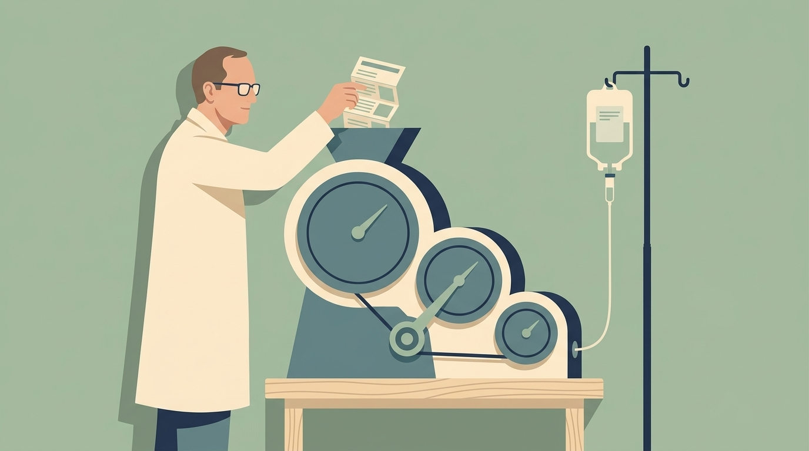
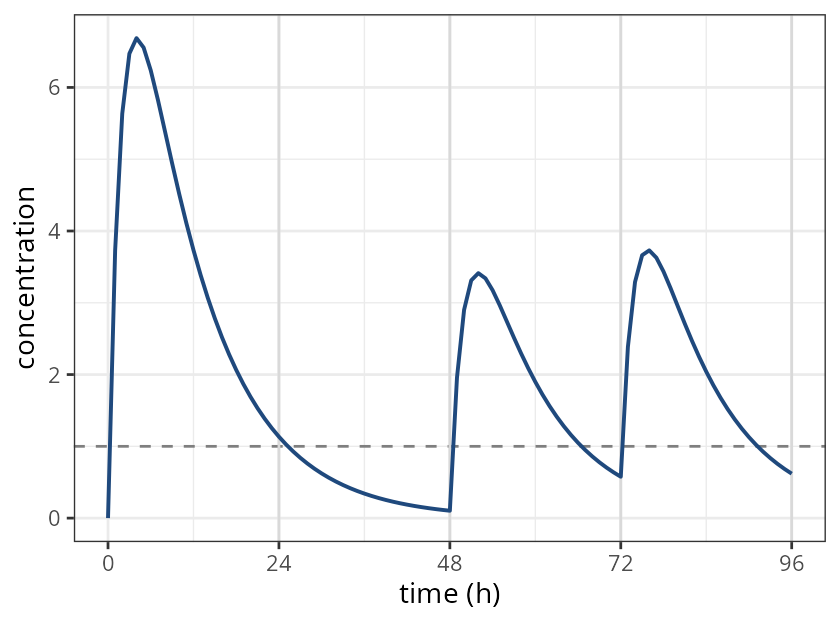
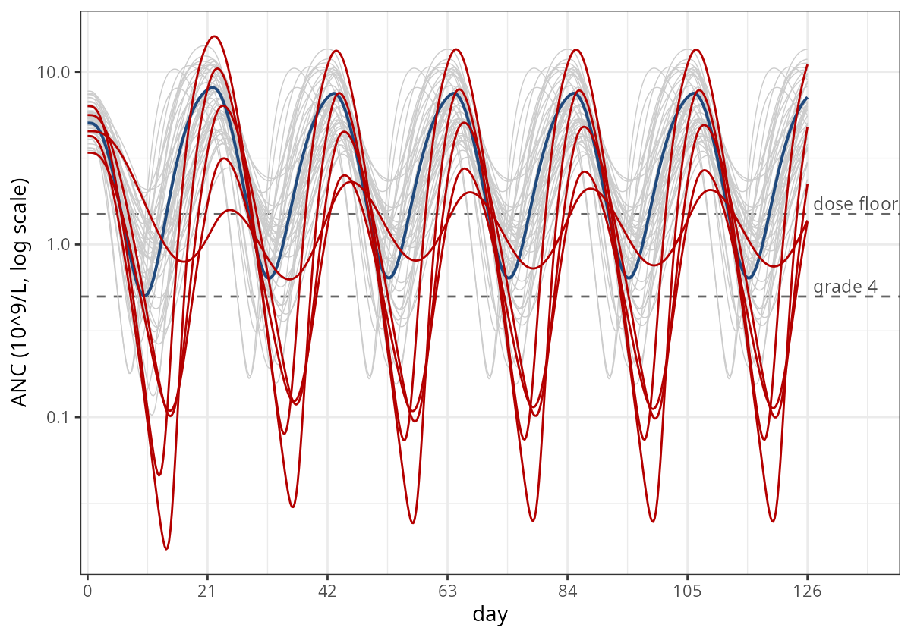
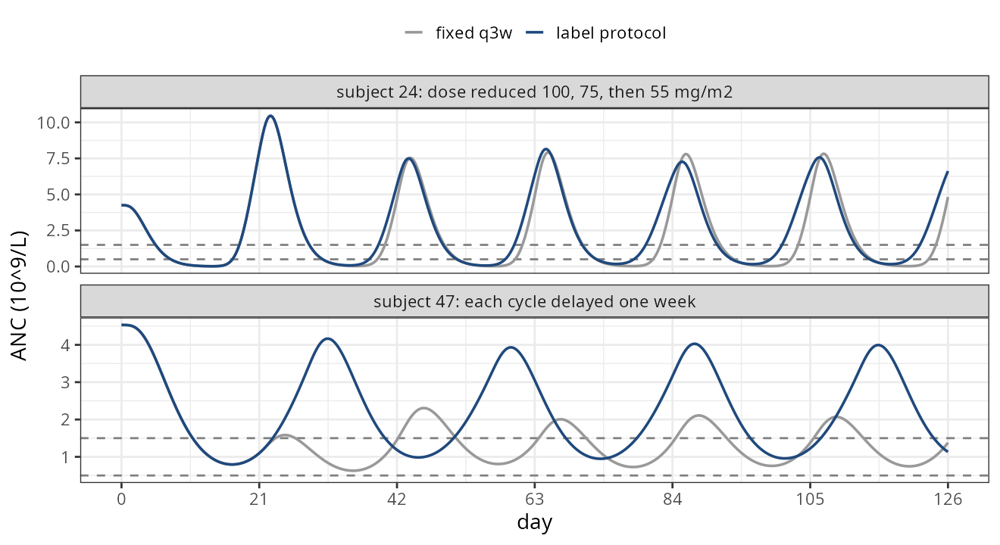

On behalf of the nlmixr2 team

model({
d/dt(depot) <- -ka*depot
d/dt(central) <- ka*depot -
cl/v*central
cp <- central/v
# every 24 h, top up if below target
if (t > 0 && t %% 24 == 0 && cp < 1) {
bolus(50)
}
})Needs rxode2 >= 5.1.7

| helper | evid |
what it pushes |
|---|---|---|
bolus() |
1 | a bolus dose, optionally with ii / addl / ss |
infuse() |
1 | a fixed-rate infusion |
infuseDur() |
1 | a fixed-duration infusion |
reset() |
3 | a system reset |
replace() |
5 | set a compartment to a value |
multiply() |
6 | scale a compartment |
phantom() |
7 | tad() / podo() bookkeeping without mass |
obs() |
0 | extra observation rows |
evid_() |
any | the low-level interface |

typical patient: nadir 0.50, recovered before every cycle
50 simulated patients:
if (is.na(level)) {
level <- 1 # 100 mg/m2
nextDue <- 21*24 # h
dayLow <- 0
}NA for each subjectdoceProtocol <- doce |>
model({
if (is.na(level)) {
level <- 1
nextDue <- 21*24
dayLow <- 0
lastT <- 0
}
dayLow <- dayLow +
(anc < 0.5)*(time - lastT)/24
lastT <- time
newLevel <- level
if (dayLow > 7) newLevel <- level + 1
if (newLevel > 3) newLevel <- 3
mgm2 <- 100
if (newLevel > 1.5) mgm2 <- 75
if (newLevel > 2.5) mgm2 <- 55
doseMg <- mgm2*bsa
startMg <- 100*bsa if (t == 0) {
infuseDur(startMg, 1, central)
}
if (t > 0 && t < 126*24 &&
t %% 168 == 0 && t >= nextDue) {
if (anc >= 1.5) {
infuseDur(doseMg, 1, central)
level <- newLevel
dayLow <- 0
nextDue <- t + 21*24
} else {
nextDue <- t + 7*24 # hold
}
}
}, append = TRUE, auto = FALSE) |>
ini(bsa <- 1.8)
rxSolve(doceProtocol,
et(seq(0, 126*24, by = 6)) |>
et(id = 1:50),
params = pop, maxExtra = 500)| 50 patients, 126 days | fixed q3w | label protocol |
|---|---|---|
| doses given at ANC < 1.5 | 9 | 0 |
| lowest ANC at a dose (109/L) | 1.10 | 1.72 |
| cycles with > 7 days at grade 4 | 19 | 5 |
| later doses at a reduced level | 0 | 20 (17 at 75, 3 at 55) |
| cycles held a week | 0 | 4 (one patient) |
popAdapt |>
group_by(id) |>
mutate(step =
c(0, diff(nextDue)))
# step == 504: dose given
# step == 168: cycle heldnextDue changes on the row the decision was made, so that row’s ANC is the one the protocol acted on

et(), or pin it with mtime()anc >= 1.5 is true for weeks; t %% 168 == 0 makes it one decisionmaxExtra. Find out the condition fires 4000 times, not 6step == 504 needs visits on the output grid; by = 5 silently reports zero dosesamt wants a symbol today: compute doseMg <- mgm2*bsa on its own linelinCmt() works too, and odeToLin() converts a linear ODE model with adaptive dosing to the analytic formSection illustrations are Gemini Nano Banana-generated artwork
nlmixr2 development team